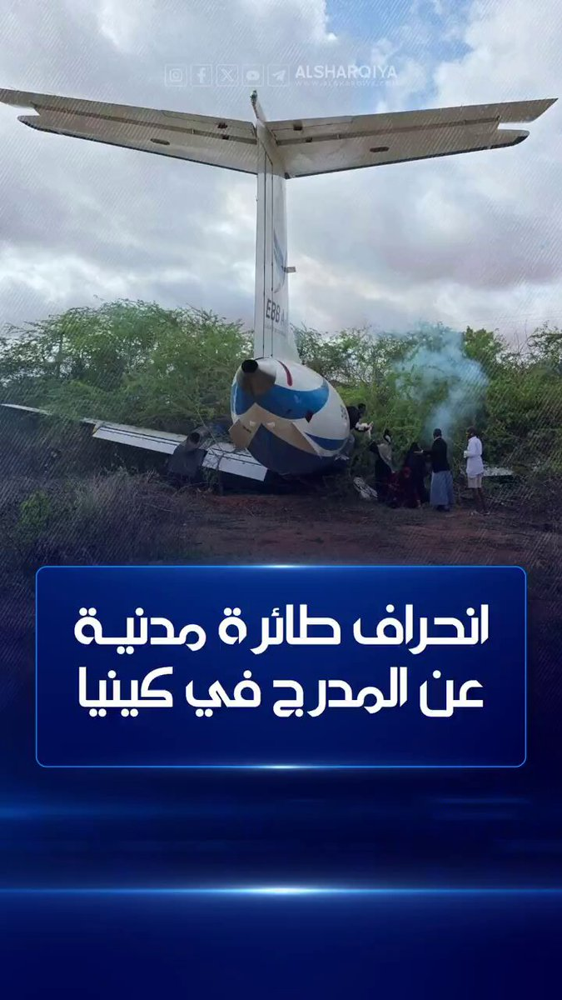
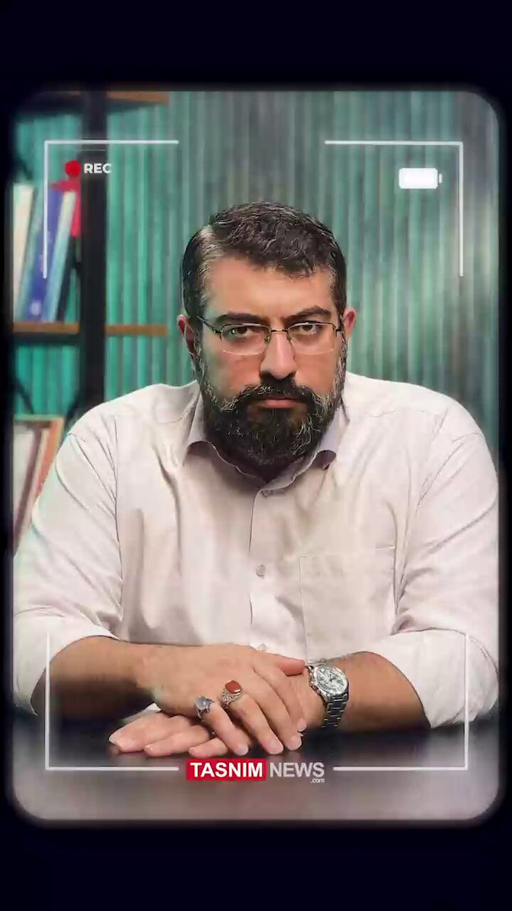
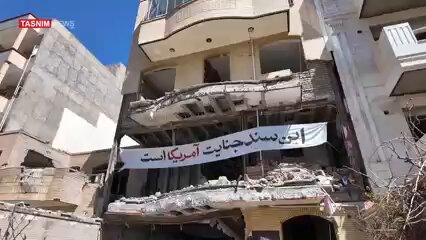
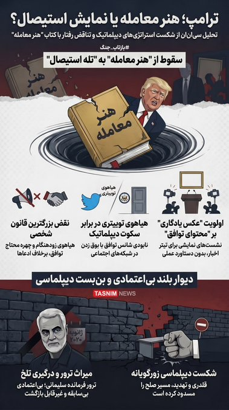
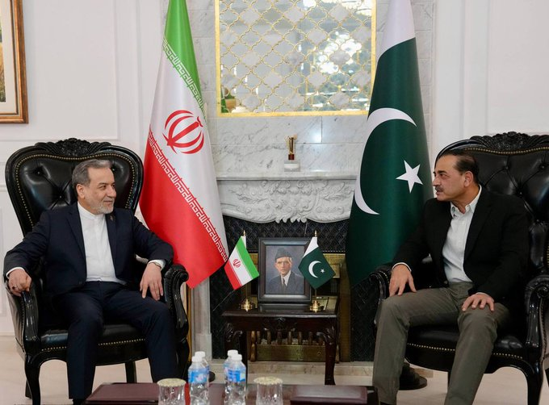
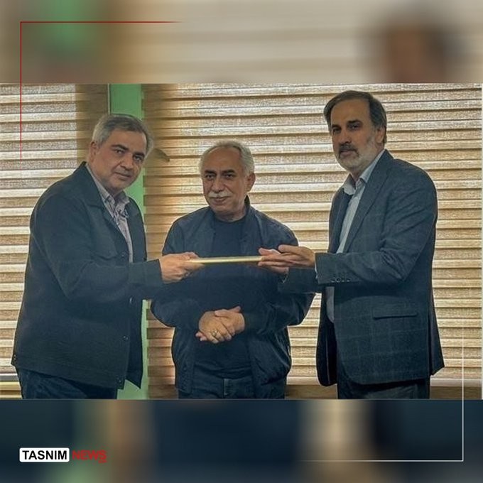
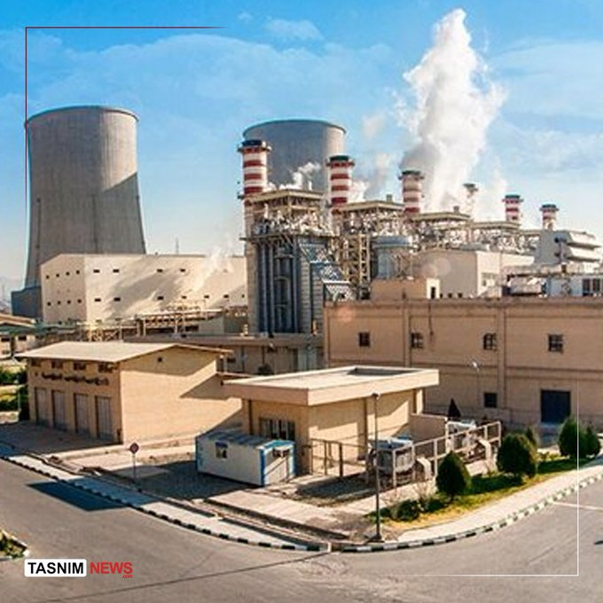
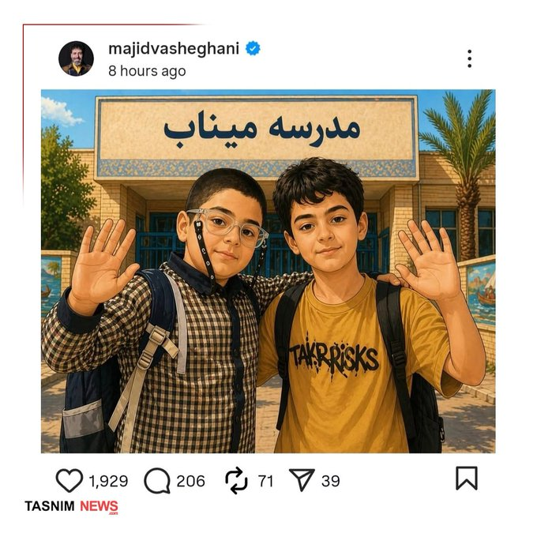
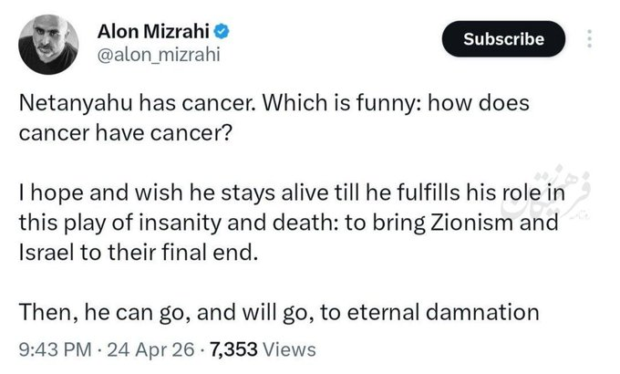
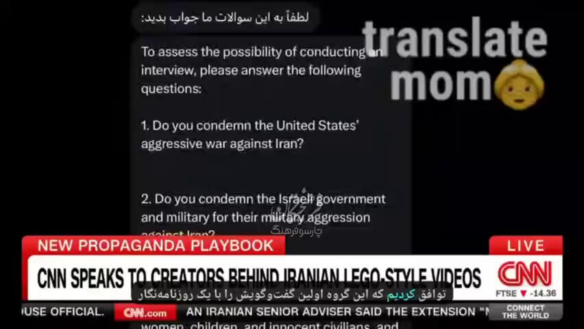

@ForeignOfficePk
📝 原文: PR No./Pakistan Launches Indigenous EO-3 Satellite, Marking Major Space Milestone
🇨🇳 译文: PR No./巴基斯坦发射本土 EO-3 卫星，标志着重大太空里程碑


🕒 2026-04-25T13:49:01+00:00














暂无文章。